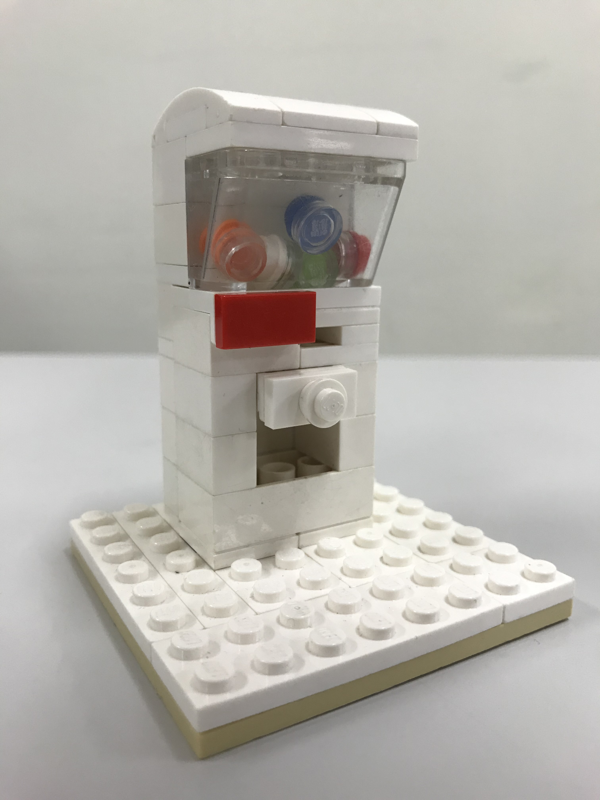
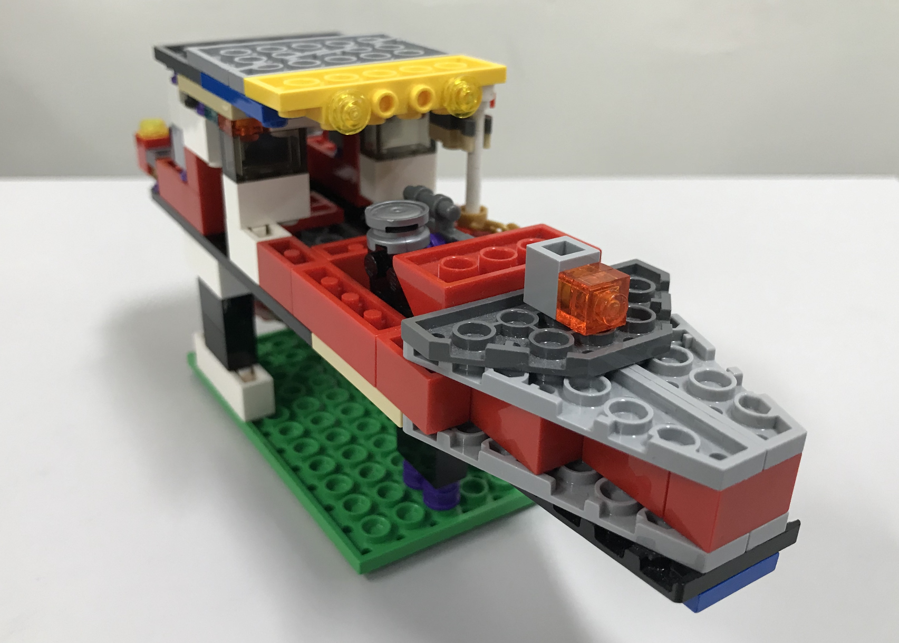

2019年秋 第8回オリジナル作品コンテストを開催！！！
結果発表！
今回も個性溢れるたくさんの作品をご応募いただきありがとうございました。その中から、厳正なる選考を勝ち抜き、まちかね祭で決勝ラウンドに参加した３作品をご紹介いたします。
最優秀賞 コウチャローさん 「ガチャガチャ」
こんなに小さいのにお金を入れるところがあったりカプセルが入ってたりと、とってもリアルなガチャガチャ。前半分のブロックが逆さまになっててリアルさを上げているのもポイント高い！
優秀賞 原田 海里さん 「森の中のクリスマスツリー」

次のクリスマスまで待ちきれないので、ツリーを開けてサンタさんの仕事をこっそりのぞいちゃおう！周りにいるうさぎさんもとってもキュート。おまけに星の力でツリーの中を温かく照らします。
優秀賞 キーさん 「漁船」
ほとんどのブロックが逆さまになって作られている珍しい作品。写真からは見えませんが、スクリューはちゃんと方向が変えられ、リールの部分はタイヤのホイールで再現！この船で漁をすれば、「大漁」の旗をたなびかせて帰ってくるでしょう！